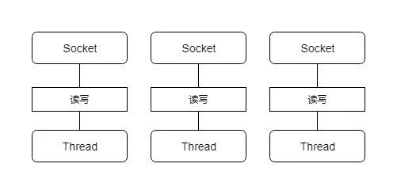

在JDK1.4出来之前,建立网络连接的时候采用BIO模式,下面以EchoServer为例子聊聊Java的阻塞IO.
BIO读写处理
先看一个BIO公共的处理类,用来处理已经建立好的客户端连接 , 接收exit,shutdown命令或者其他字符串.exit是断开当前客户端,shutdown是关闭当前服务,其他则进行回显.直接使用了socket连接的输入输出流.
/**
* 处理已经建立好的连接
*/
public class EchoSocketUtil {
public static boolean processSocket(Socket socket) throws IOException {
// 获得socket的输入输出流
BufferedReader bufferedReader = new BufferedReader(new InputStreamReader(socket.getInputStream()));
BufferedWriter bufferedWriter = new BufferedWriter(new OutputStreamWriter(socket.getOutputStream()));
String request;
while ((request = bufferedReader.readLine()) != null) {
// 读取数据是阻塞的
if ("exit".equals(request)) {
//输入是exit的时候关闭当前连接 ,提示主线程非关闭服务
socket.close();
return false;
} else if ("shutdown".equals(request)) {
// 输入时shutdown的时候关闭当前连接 , 提示主线程关闭服务
socket.close();
return true;
} else {
// 其他则回显当前输入的字符串
bufferedWriter.write(request);
bufferedWriter.flush();
}
}
return false;
}
}
单连接服务器
假设EchoServer的代码如下 , 创建一个ServerSocket,并调用accept接收连接. 读取数据是阻塞的 , 在连接未释放之前当前线程一直在处理该连接的IO事件 , 可以翻阅下阻塞式IO模型的图. 所以EchoServer只能同时接收一个客户端,在业务处理完成后才能接受其他客户端的连接.
public class EchoServer {
public static void main(String[] args) throws IOException {
//创建一个ServerSocket监听端口12345上的连接
ServerSocket serverSocket = new ServerSocket(12345);
boolean isShutdown = false;
while (!isShutdown){
try{
// 接收客户端的连接 , 如果没有连接建立则阻塞到连接建立
Socket socket = serverSocket.accept();
isShutdown = EchoSocketUtil.processSocket(socket);
}
catch (Exception ex){
ex.printStackTrace();
}
}
}
}
并发服务器
如果需要并发管理多个客户端 , 则需要对每个连接进行异步化处理.比如对每个连接都创建一个线程 . EchoServer代码修改为
public class EchoServer {
private volatile boolean isShutDown = false;
private ServerSocket serverSocket;
/**
* 创建服务
* @param port 端口
*/
public EchoServer(int port) {
try {
serverSocket = new ServerSocket(port);
} catch (Exception ex) {
ex.printStackTrace();
}
}
/**
* 关闭服务
*/
private void shutdown() {
this.isShutDown = true;
}
/**
* 启动服务
*/
public void run() {
while (!isShutDown) {
try {
Socket socket = serverSocket.accept();
// 每次接收一个连接, 创建一个线程进行处理
(new SocketProcessor(socket)).start();
} catch (Exception ex) {
ex.printStackTrace();
}
}
}
/**
* socket处理线程
*/
private class SocketProcessor extends Thread {
private Socket socket;
SocketThread(Socket socket) {
this.socket = socket;
}
@Override
public void run() {
try {
if (EchoSocketUtil.processSocket(socket)) {
shutdown();
}
} catch (Exception ex) {
ex.printStackTrace();
}
}
}
}
服务器模型示意如图

缺点也很显而易见 :
- 很多时候, 处理的线程都是处于休眠状态,只是等待输入输出数据就绪.
- 每个连接都需要创建一个线程来处理 , 需要分配线程栈 .消耗内存
- 大量连接时,线程上下文切换
这种服务器模型比较典型的有Tomcat的BIO Connector ,同样也是由于上述缺点在并发增大后性能急剧下降, 版本7.5以后以及改写为NIO